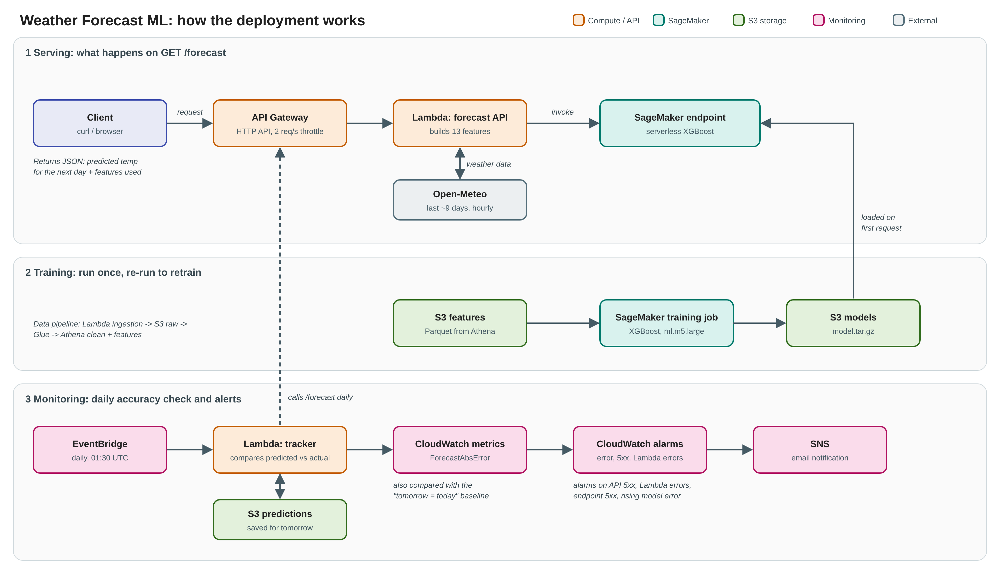

From your browser to the model
- Your browser calls
GET /forecaston an API Gateway HTTP API (rate limited to protect costs). - A Lambda function pulls the last nine days of hourly weather from Open-Meteo, turns complete days into 13 features (daily averages, 1- and 2-day lags, a 7-day average, month and day of year), and calls the model.
- A SageMaker serverless endpoint runs an XGBoost model trained on 2020–2025 data and returns the predicted average temperature for the day after the latest complete day.
- A daily job compares each saved prediction with what actually happened and publishes the error to CloudWatch, with alarms by email.

Why it forecasts today, not tomorrow
The model learned to predict a day's average temperature from the full day before it. Days are counted in UTC, and the last day with all 24 hours of data is normally yesterday, so the prediction is for today. Forecasting tomorrow would need today's complete data, or a separate model trained to look two days ahead.
Does it beat a trivial guess?
Scored on 329 held-out days it never saw while training (chronological split, no shuffling).
| Model | Avg miss (MAE) | RMSE |
|---|---|---|
| Same as the previous day | 2.37 °C | 3.14 °C |
| 7-day average | 2.80 °C | 3.53 °C |
| XGBoost (this model) | 1.99 °C | 2.60 °C |
About 16% better than the strongest simple baseline. Day-to-day temperature is hard to beat because it changes slowly.
Known limits
- One city (Toronto), and the model only sees past observations. It does not use atmospheric simulations, so it is not a substitute for a real forecast.
- The model was trained on Open-Meteo's historical archive, while the forecast page feeds it the recent-data feed, so inputs can differ slightly from what it learned on.
- The prediction is for the day after the latest complete day of data, which is normally today (UTC).
- The first request after a quiet period is slow by design (serverless cold start).